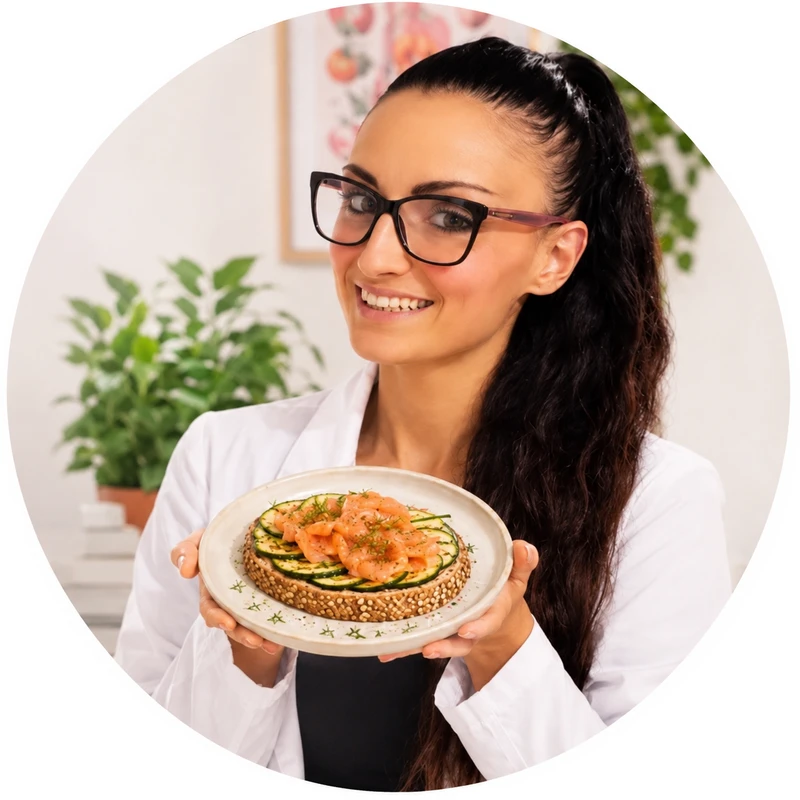

Dott.ssa Mariolina Picardi · Biologa Nutrizionista
Mangia per affrontare la vita, non per essere perfetto.
Impara a nutrirti con equilibrio, flessibilità e consapevolezza. Senza rincorrere la perfezione, costruendo abitudini che possano accompagnarti nella vita di ogni giorno.

Chi sono
Mi presento...
Sono la Dott.ssa Mariolina Picardi, Biologa Nutrizionista.
Credo che prendersi cura della propria alimentazione non debba significare vivere tra rinunce, regole rigide e sensi di colpa.
Per me, mangiare bene significa imparare a conoscere le proprie esigenze, trovare un equilibrio e costruire abitudini che possano accompagnarci nella vita reale.
Non esistono alimenti da demonizzare o scelte che debbano essere sempre perfette. Conta il modo in cui impariamo a nutrirci nel tempo, con consapevolezza, flessibilità e sostenibilità.
Il mio obiettivo è aiutarti ad acquisire strumenti utili per diventare sempre più autonomo nelle tue scelte alimentari. Perché un percorso nutrizionale dovrebbe insegnarti a prenderti cura di te, non a dipendere per sempre da una dieta.
“Non cerco la perfezione. Credo nella forza delle abitudini che durano.”
Un percorso che parte da te
Il tuo equilibrio non deve assomigliare a quello di nessun altro.
Ogni persona ha abitudini, esigenze e ritmi differenti. Per questo è importante costruire un percorso che tenga conto della vita reale.
-
A chi è stanco delle diete rigide
Hai seguito schemi alimentari difficili da mantenere? Ti aiuto a ritrovare un rapporto sereno con il cibo, senza rinunce estreme né sensi di colpa.
-
A chi ha una vita piena e attiva
Ti aiuto a conciliare lavoro, famiglia, allenamento e convivialità con un’alimentazione equilibrata, flessibile e semplice da gestire ogni giorno.
-
A chi vuole scegliere in autonomia
Ti accompagno a comprendere le tue esigenze nutrizionali e ad acquisire strumenti concreti per scelte consapevoli, oggi e nel tempo.
La mia filosofia
Equilibrio, non perfezione.
Non credo nelle soluzioni estreme o nelle regole impossibili da seguire. Credo in un'alimentazione che sappia adattarsi alla persona, alle sue necessità e alla sua quotidianità.
“La nutrizione deve aiutarti a vivere meglio, non complicarti la vita.”
-
Equilibrio
La qualità dell'alimentazione nasce dall'insieme delle scelte, non dal singolo pasto.
-
Sostenibilità
Le abitudini migliori sono quelle che possono essere mantenute nel tempo.
-
Flessibilità
Mangiare bene significa sapersi adattare anche alle occasioni sociali e agli imprevisti.
-
Consapevolezza
Comprendere il ruolo degli alimenti ti aiuta a scegliere con autonomia, senza dipendere da regole esterne.
Come posso aiutarti
Il tuo percorso nutrizionale.
Alimentazione e movimento sono due alleati: un percorso orientato all'ascolto, che integra scelte alimentari consapevoli e il giusto allenamento per il tuo benessere quotidiano.
-
Il punto di partenza
Consulenza nutrizionale
Un incontro dedicato all'analisi delle tue abitudini alimentari, dello stile di vita e del livello di attività fisica, per definire obiettivi realistici e impostare un'alimentazione equilibrata che sostenga energia, benessere e allenamento.
-
Conoscere per scegliere
Educazione alimentare
Strumenti pratici per comprendere il ruolo dei nutrienti, comporre pasti bilanciati e gestire con serenità convivialità e imprevisti, imparando ad adattare l'alimentazione ai giorni di allenamento e di recupero.
-
Nutrizione & allenamento
Percorsi nutrizionali personalizzati
Un accompagnamento costruito sulle tue caratteristiche e sui tuoi ritmi, in cui alimentazione e movimento lavorano in sinergia: un piano nutrizionale esprime il suo massimo potenziale quando è abbinato al giusto allenamento.


Un passo alla volta
Verso una maggiore autonomia alimentare.
-
Passo 1: Raccontami le tue esigenze
Il primo passo è entrare in contatto e condividere ciò che desideri approfondire.
-
Passo 2: Analizziamo le tue abitudini
Ascolto la tua storia: alimentazione, ritmi quotidiani, attività fisica e obiettivi, per partire da una base reale.
-
Passo 3: Costruiamo il tuo percorso
Definiamo un approccio su misura, in cui alimentazione e allenamento lavorano in sinergia con la tua quotidianità.
-
Passo 4: Diventa autonomo nelle tue scelte
Sviluppi consapevolezza e strumenti utili per affrontare l'alimentazione con sempre maggiore autonomia.
Dove incontrarci
Uno spazio dedicato al tuo benessere.
Indirizzo
Via del Salvatore, 2
Meta (NA)
Online
Ovunque tu sia
Domande frequenti
Tutto quello che vorresti sapere.
Non necessariamente. Nel mio approccio nessun alimento viene demonizzato: lavoro sulla varietà, sulle quantità e sulle abitudini complessive, così puoi continuare a goderti anche i cibi che ami.
No. Non ti chiederò mai la perfezione: insieme costruiremo abitudini sostenibili e ti aiuterò a gestire con serenità anche le giornate diverse dal solito.
Per me significa trasmetterti conoscenze e strumenti pratici per comprendere meglio le tue scelte, così da gestire l'alimentazione con sempre maggiore autonomia.
Sì. Costruisco ogni percorso partendo dalle tue esigenze, dai tuoi ritmi quotidiani, dalle tue abitudini e dalla tua attività fisica, perché le scelte siano realistiche e sostenibili.
Puoi scrivermi compilando il modulo di contatto oppure chiamarmi al 333 416 8356: ti risponderò personalmente con tutte le informazioni.
Inizia da te